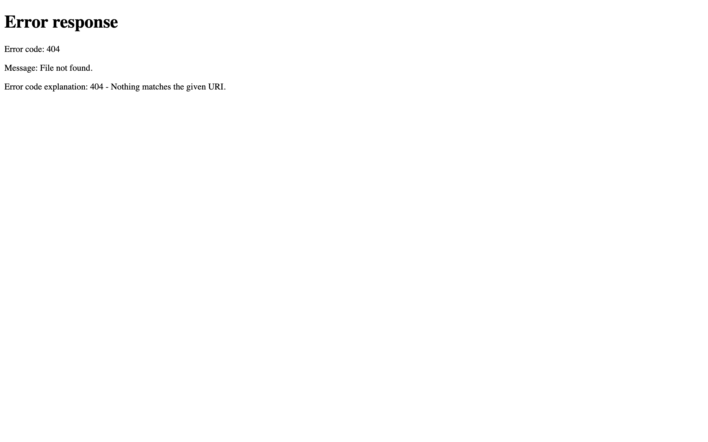

Visualize over 5,000 shortcuts perfectly mapped to your keyboard. A blazing-fast, native-like macOS application.

Automatically scans your Mac and aggregates shortcuts from VS Code, Obsidian, BetterTouchTool, and more.
Packaged as a lightweight application. No browser tabs, no clutter. Just a beautiful window that feels right at home on Mac.
Instantly switch contexts to view Global hotkeys or filter down to specific apps to master your workflow.